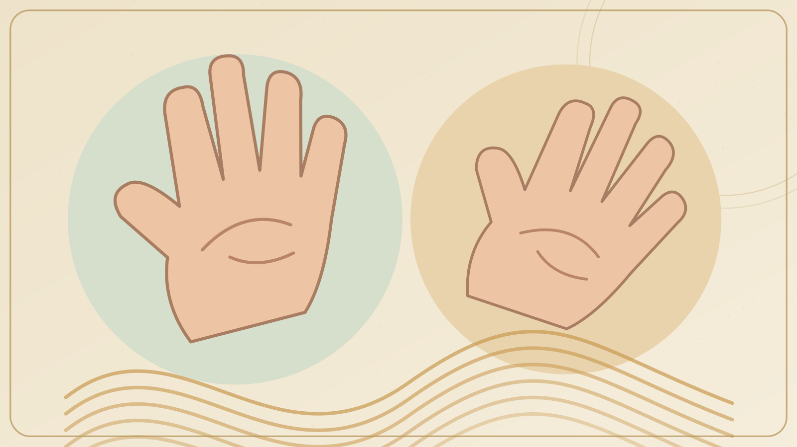

接触面積と主観的な感覚から違いを知ります。経穴への加圧方法を教えるものではありません。
接触範囲も手技を表す言葉の一つ
手技を知るときは動きの速さだけでなく、手と身体が触れる範囲にも注目できます。一般に手のひらは広い接触、指の腹は比較的集中的な接触を示します。これは形と接触面から理解できる違いであり、特定の臓器に作用する証拠ではありません。実際の感覚には力加減、姿勢、タオル、個人の好みも影響します。
手のひらの接触の見た目の特徴
イメージ映像では、手のひらの接触の輪郭が比較的広く見えます。動きは安定していることも移動を伴うこともあるため、手のひらだけで穏やかだとは判断できません。広い接触が好みなら、相談時にそう伝えましょう。特定の角度や技術名を指定するより互いに理解しやすくなります。
指の腹の接触の見た目の特徴
接触面が小さいと、動きはより集中的に見えますが、力を強める必要があること、深いこと、専門性が高いことを意味しません。部位によって感覚は異なります。局所への接触が集中的すぎると感じたら、別の方法や中止を求められます。痛み、赤い跡、翌日の感覚で手技の成功を判断する必要はありません。
接触する素材も体験に影響する
服装、タオル、その他の覆い方もサービスの意思疎通の一部です。服やタオル越しの接触を好む人も、特定の素材に敏感な人もいます。事前に選択できる方法を確認し、触れてほしくない範囲を伝えましょう。部位の露出は手技の質に必要な条件でも、応じなければならない要求でもありません。
四つの手技を比較するときの視点
ブランドの四つの短い動画で、手の接触範囲、比較的とどまる動き、小幅の円運動、連続した移動を比較できます。映像の特徴から手技を知り、安定した接触、明確なリズム、局所接触の少ない方法など自分の好みを考えましょう。動画はAIによるイメージであり、実際の力加減を伝えることはできず、自己操作の根拠には適しません。
接触範囲と時間
短い接触と長めの停留も見分けやすい違いです。接触時間は効果の指標ではなく、共通の理想的な秒数もありません。好みを表現しにくいときは、広め、集中的、ゆっくり、速めなど日常語で伝え、理解してもらえたか確認しましょう。同じサービスでも実際の接触感は本人の反応を基準にします。
よくある質問：どの接触が自分に合っていますか？
すべての人に合う一つの答えはありません。初めて相談する際は接触範囲と力加減の希望を伝え、提供者が対応できる内容を確認しましょう。最近のけが、医療を受けている状況、原因不明の不調がある場合は、自己判断で手技を選ばず有資格の医療従事者に確認してください。日常のリラクゼーションには明確な同意が必要で、途中でも調整や中止を求められます。
参考資料
衛生福利部｜民俗調理業の現行規範（閲覧：2026-11-26）
米国国立補完統合衛生センター｜マッサージの安全情報（英語）（閲覧：2026-11-26）
本文は一般的な生活・文化情報で、個別の医療助言ではありません。本人による確認待ちです。実際のサービス内容、料金、時間、場所はお問い合わせで確認してください。